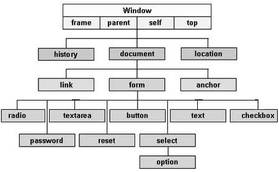

Every web page resides inside a browser window which can be considered as an object.
A Document object represents the HTML document that is displayed in that window. The Document object has various properties that refer to other objects which allow access to and modification of document content.
The way a document content is accessed and modified is called the Document Object Model, or DOM. The Objects are organized in a hierarchy. This hierarchical structure applies to the organization of objects in a Web document.
Window object − Top of the hierarchy. It is the outmost element of the object hierarchy.
Document object − Each HTML document that gets loaded into a window becomes a document object. The document contains the contents of the page.
Form object − Everything enclosed in the <form>...</form> tags sets the form object.
Form control elements − The form object contains all the elements defined for that object such as text fields, buttons, radio buttons, and checkboxes.
Here is a simple hierarchy of a few important objects −

There are several DOMs in existence. The following sections explain each of these DOMs in detail and describe how you can use them to access and modify document content.
The Legacy DOM − This is the model which was introduced in early versions of JavaScript language. It is well supported by all browsers, but allows access only to certain key portions of documents, such as forms, form elements, and images.
The W3C DOM − This document object model allows access and modification of all document content and is standardized by the World Wide Web Consortium (W3C). This model is supported by almost all the modern browsers.
The IE4 DOM − This document object model was introduced in Version 4 of Microsoft's Internet Explorer browser. IE 5 and later versions include support for most basic W3C DOM features.
If you want to write a script with the flexibility to use either W3C DOM or IE 4 DOM depending on their availability, then you can use a capability-testing approach that first checks for the existence of a method or property to determine whether the browser has the capability you desire. For example −
if (document.getElementById) { // If the W3C method exists, use it } else if (document.all) { // If the all[] array exists, use it } else { // Otherwise use the legacy DOM }